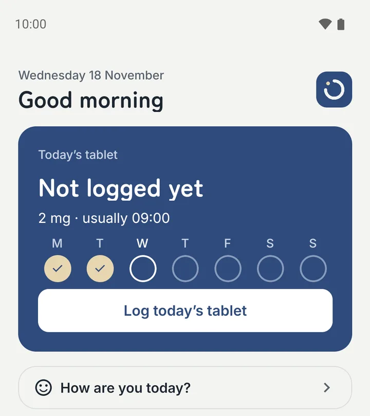
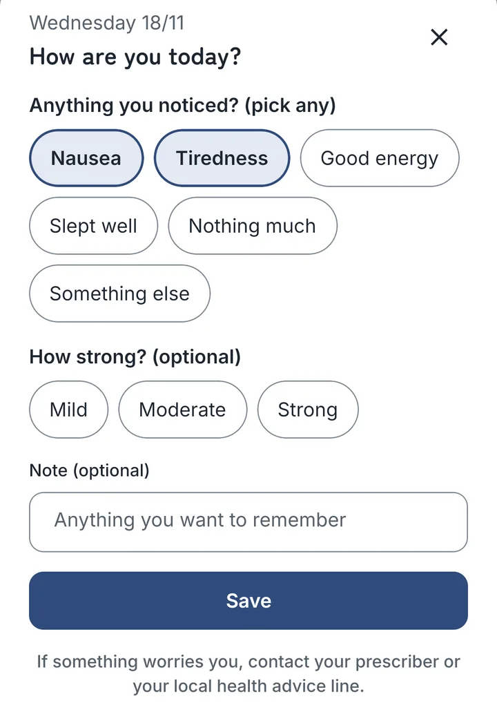
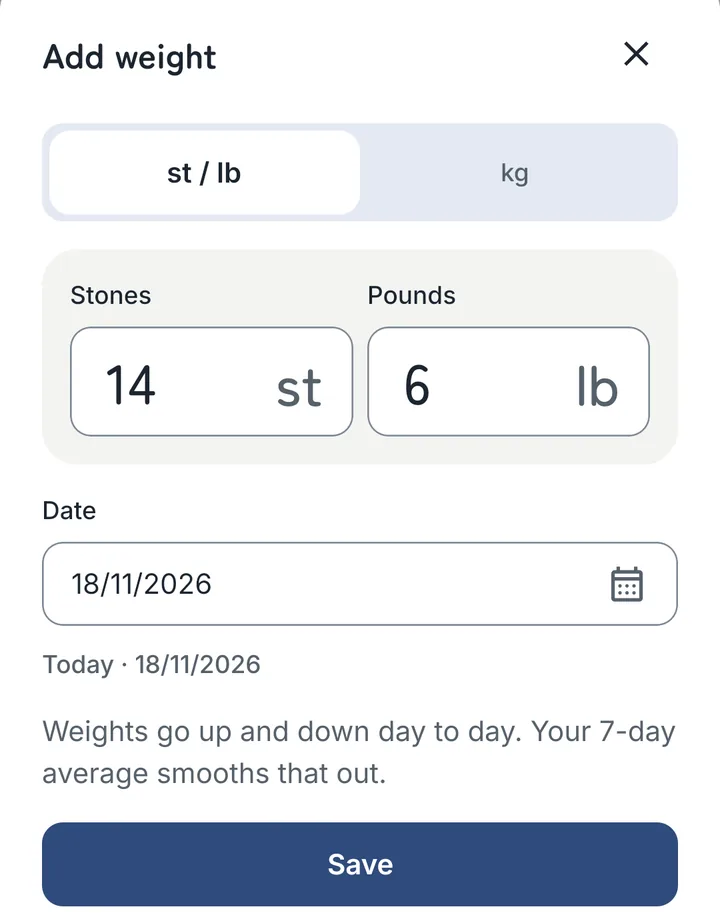
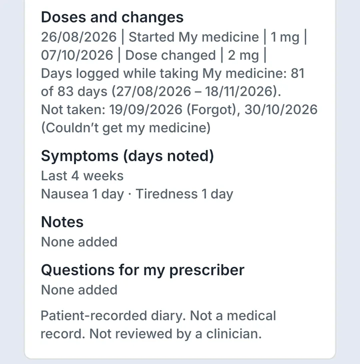
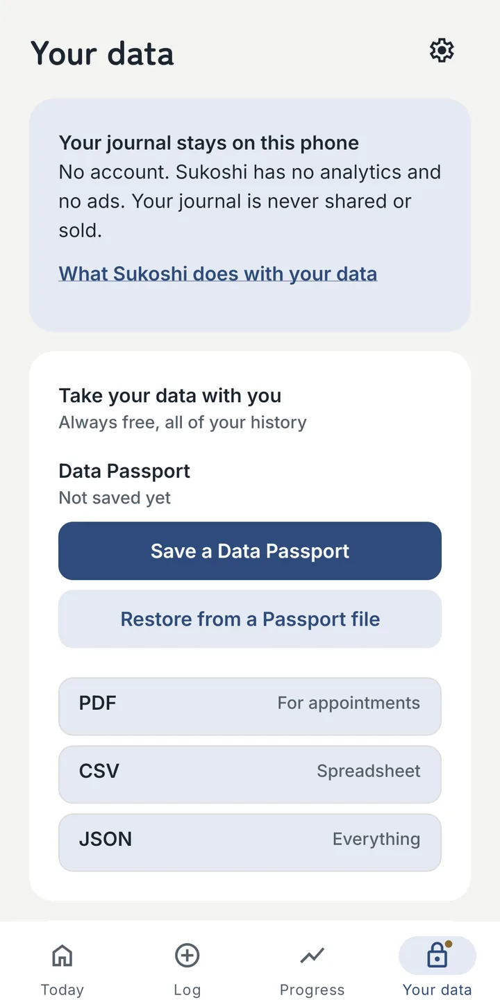
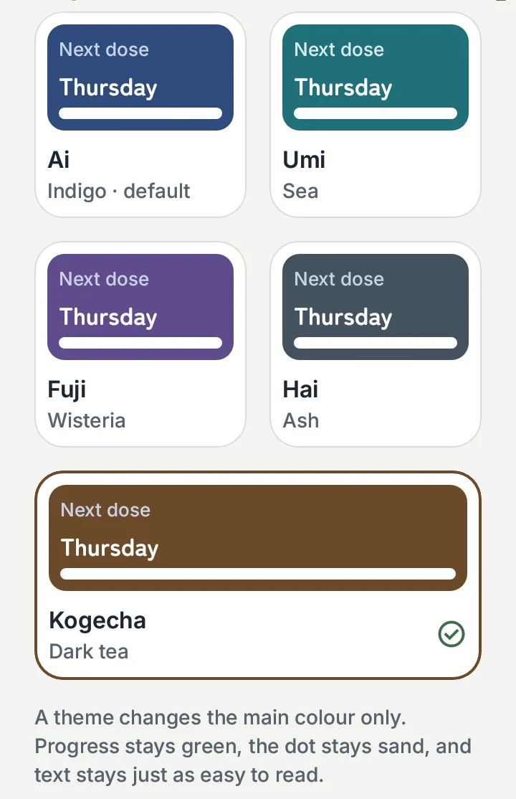
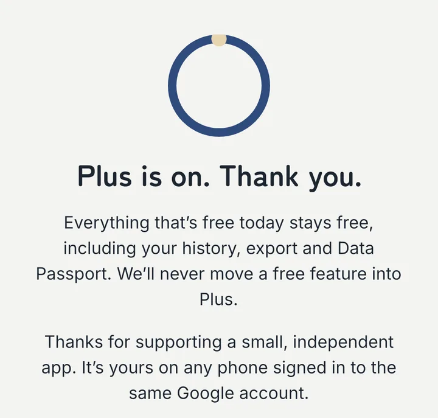

Sukoshi 少し · little by little
A calm, private diary for your doses, symptoms and weight.
Log a dose in a few taps, note how you feel, and look back over your own history whenever you like. No account, no ads, and your journal never leaves your phone unless you choose to export it.
Coming to Google Play in early 2027 · Android

Built around three promises
No account
Open it and start. There's nothing to sign up for, and no email or password to remember.
Your journal stays on your phone
What you log is kept on your phone. We never see it, there are no ads, and there's no tracking of our own.
Free stays free
Logging, reminders, history, export, backup and the appointment summary are free, and always will be.
What you can do
Sukoshi works for weekly or daily routines. Today shows your usual day or time, whether it's logged, and the rest of your week as a row of dots. Missed one, took it late, or taking a break? Record it as it happened: Sukoshi keeps one honest history. Everything in this part of the page is free.
Note how you feel in a few taps
Pick anything you noticed, say how strong it was if you like, and add a note. Over time you'll have a clear record to look back on, in your own words.

Weight in st/lb or kg
Record weigh-ins in stones and pounds, or in kilos. Weights go up and down from day to day, so Sukoshi also shows your 7-day average.
Use a smart scale? Turn on Health Connect and Sukoshi brings your weigh-ins in for you. It reads your weight and nothing else.

A free summary for appointments
Make a tidy PDF of your doses, changes, symptoms and notes to take to your prescriber or pharmacist, with your questions for them at the end. Choose what goes in. Every page says it's a patient-recorded diary.

Your data, your way
Export everything as a spreadsheet (CSV) or as JSON. Back up with a Data Passport: an encrypted file locked with a passphrase only you know, which you can restore on a new phone.
Coming from another tracker? Bring your history with you from a CSV file. It's read on your phone, and it's free.

Everything that's free
No trial, no time limit, and nothing you've logged is ever locked away.
- Dose logging, weekly or daily
- Reminders at your usual time
- Pause, stop or switch medicine, with one history
- Symptoms, side effects and notes
- Weigh-ins and your 7-day average
- Your full history, whenever you like
- Next widgets, small and wide
- Dark mode
- App lock with fingerprint, face or PIN
- The appointment summary PDF
- CSV and JSON export
- Data Passport backup and restore
- Import from another tracker
- Health Connect weigh-ins
Sukoshi Plus: a few extras, paid once
Everything you need is free. Plus adds comfort extras and helps keep Sukoshi going.
- More widgetsThis week, Weight and Supply.
- Colour themesUmi, Fuji, Hai and Kogecha, alongside the default Ai indigo. In light and dark.
- Extra chartsMore ways to look back over your history.
- Your own symptomsAdd the ones that matter to you.
- A richer appointment PDFMore detail and more choices for your summary.
One purchase through Google Play. No subscription. A founder price for early supporters.
Plus is yours on any phone signed in to the same Google account.
Free stays free
Everything that's free today stays free, including your history, export and Data Passport. We'll never move a free feature into Plus.



Say thanks
Sukoshi is made by one person at weekends. If it helps you and you'd like to support it, you can leave a one-off tip from inside the app: Settings › About › Say thanks, or the Say thanks link at the bottom of the Plus screen.
Tips are paid through Google Play like any other purchase. They don't unlock anything, and Sukoshi will never ask you for one.
Help us test it in December
Before Sukoshi goes on Google Play, a small group of Android testers will use it for about two weeks and tell us what's confusing, broken or missing. Testers get Sukoshi Plus free for good.
Put "Sukoshi tester" in the subject and we'll send you the sign-up form when testing opens. Please don't include anything about your health: we don't need it.
You'll need
- An Android phone with Android 9 or newer
- To be 18 or over
- A minute or two a day